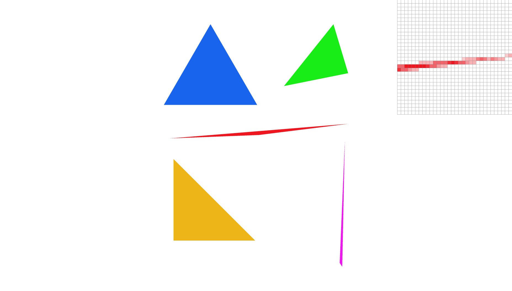
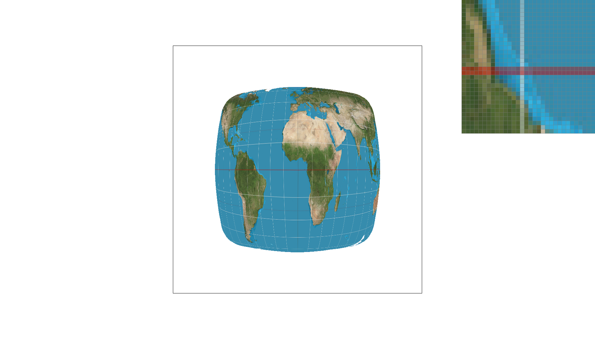
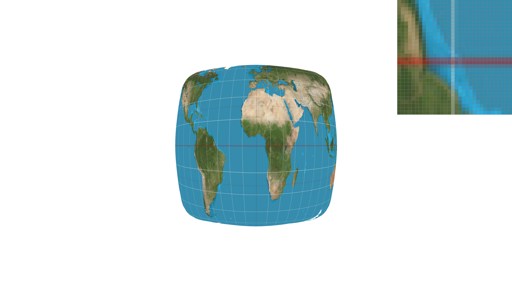
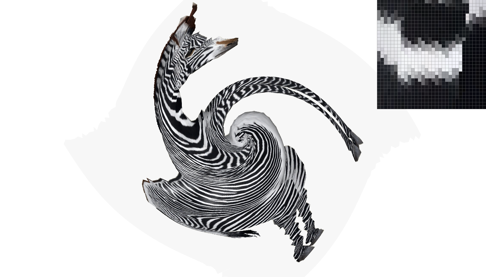

Overview
Give a high-level overview of what you implemented in this project. Think about what you've built as a whole. Share your thoughts on what interesting things you've learned from completing the project.
Section I: Rasterization
Part 1: Rasterizing single-color triangles
For each pixel in the framebuffer, we want to check whether the midpoint of that pixel (x + 0.5, y + 0.5) resides within the triangle defined by the three vertices (x0, y0), (x1, y1), and (x2, y2). In order to check that, we have to use line equation to see if the inner products are all either positive or negative. The reason of checking both cases is that we don't know whether the third point is above or below the line formed by the first two points.
My algorithm is no worse than the one that checks each sample within the bounding box because I first get the minimum and maximum x and y values from the three vertices to limit the pixels I have to edit.

Part 2: Antialiasing triangles
In order to perform anti-aliasing, we can either perform a low-pass filter then sample or average the super-samples. Since averaging is much easier than perform a low-pass filter without introducing noise, a larger framebuffer has to be used to store the super-samples; we use supersample_buffer in our case. The size of the supersample_buffer will be determined by the sample rate; if sample rate is n, we will need to scale the width and height by square root of n resulting n times bigger array to store the original pixels. Similar to Part 1, we have to calculate the center of the super-samples and perform in_triangle test to fill in the color. The super-samples are then averaged to get the final color value of the corresponding pixel. Supersampling is useful because it can perform auti-aliasing to reduce the jigginess introduced by the high frequency pixels. In addition, we have to call fill_supersample every time we iterate through the supersamples to fill in the corresponding color in the supersample_buffer; the supersamples are then averaged to the framebuffer in resolve_to_framebuffer. When sample rate is changed, we have to clear the framebuffer by filling with the white color and change supersample_buffer's size.
|
|
|

|
From the pictures above, we observe that the missing pixels of the narrow part of the triangle is appearing more apparently as the sample_rate increases. This is the direct result of supersampling. As higher sample_rate increases the granularity of the pixel, we have a higher control over the value of a pixel. More specifically, the supersamples can now capture the narrow part of the triangle as there are more smaller pixels contributing to final color. Note that this artifact is equivalent to convolute the pixels with box filter then sample.
Part 3: Transforms
Section II: Sampling
Part 4: Barycentric coordinates
Barycentric Coordinates is one of the core algorithms used in computer graphics for triangle mesh because it can be used to interpolate different values such as texture, color, shading, etc. inside the triangle using the three vertices of the triangle. The idea of barycentric coordinates is similar to linear interpolation, but it is done on three variables instead of two variables. One can also think of it as proportional area interpolation. The problem can be framed as the following: Given a point in a triangle (color Red,Green,Blue on each vertex), what is the contribution of each vertex's color to the given point. The most obvious point in the triangle is the center of the triangle, which averages the area of the sub-triangles created by connection the center to the vertices, because it will have the average color of the vertices. Another example is the midpoint of the edges where the color is combined by only two colors. The following picture can give you more intuition.
Part 5: "Pixel sampling" for texture mapping
Pixel sampling is the idea of sampling the color of the pixel from the texture map, and it is mainly used to deal with texture magnification where single texel contributes to multiple pixels. The texture coordinate of the pixels inside the triangle can be interpolated in the same manner as barycentric coordinates. The process is as follow: First, the user will choose the corresponding sampling methods: either nearest or bilinear. If it is the nearest sampling method, it will take the interpolated texture coordinates and round it to the nearest u * (width - 1) and v * (height - 1) coordinates. These coordinates will then be sampled from the texture map as long as they are not out-of-bound. If it is the bilinear sampling method, it will take the interpolated texture coordinates and get the nearest four coordinates by flooring to interpolate the value at the desired point using simple linear interpolation such as area interpolation.
|
|
|
|

|

|
There is a big difference when the sample_rate is low. As with nearest sampling method, the white column in the png is much more apparent than the bilinear sampling method comparing to nearby area. However, when the sample_rate increases eg. sample_rate = 16, the difference between the two methods is very subtle, but you can still tell the subtle color difference of the white column in the png. I think the reason of subtle difference with higher sample rate is the smoothed-out surface does not have as much high frequency pixels as lower sample rate, thus lowering the blockiness already.
Part 6: "Level sampling" with mipmaps for texture mapping
Level sampling is also called mipmapping. It is used to deal with minimization where multiple texels contributes to single pixel, resembling the classical aliasing problem. Unlike supersampling where the sampling frequency increases to avoid aliasing, mipmapping matches the "correct" frequency of the texels we want to sample to the sample frequency . In order to implement level sampling, we have to first estimate the ideal level sampling given the pixels and texels. One of the way of estimating is to calculate the u and v coordinates change per x and y coordinates change, in our case, when x+1 and y+1. This can be done easily using barycentric coordinates again! After calculating the (du/dx,dv/dx) and (du/dy,dv/dy), we have a understanding of how far away each texel is when the pixel varies by one, thus getting the estimated ideal mipmap level by taking the log of the max between their euclidean distances with the original uv. There are three different level sampling implemented in this project: nearest level, nearest level + 1, and linear interpolation between nearest and nearest + 1. In order to use any of this, multiple mipmap levels of the texels are pre-calculated. One way to think of mipmap levels is downsampling; as the level increases, the texels have lower resolution.
After implementing this part, we have three weapons in the arsenal: supersampling, pixel sampling, and level sampling. To better understand the tradeoffs between them, we have to understand each of them in terms of speed, memory usage, and anti-aliasing power.
Supersampling could immediately solve the aliasing problem with the big tradeoff of speed and memory. On the other hand, level sampling solves the aliasing problem with the tradeoff of memory under reasonable speed, but of course, it might not be as good as supersampling. In addition, pixel sampling solves the aliasing problem without suffer much overhead in terms of memory and speed, thus not as good result as others.
|

|
|
|
|
|
It is interesting to observe that nearest level sampling is not always good. Looking at the zoomed-in pixels, there are multiple grey pixels appearing inside the cloud of white pixels with nearest level sampling. I think this is happening because of the very narrow triangles used in this svg file.
Section III: Art Competition
If you are not participating in the optional art competition, don't worry about this section!